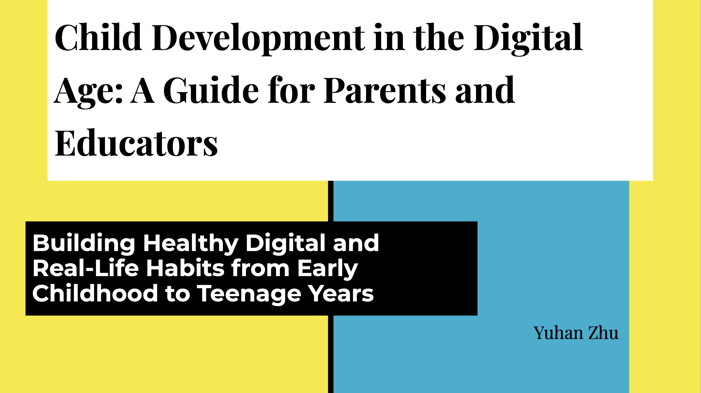
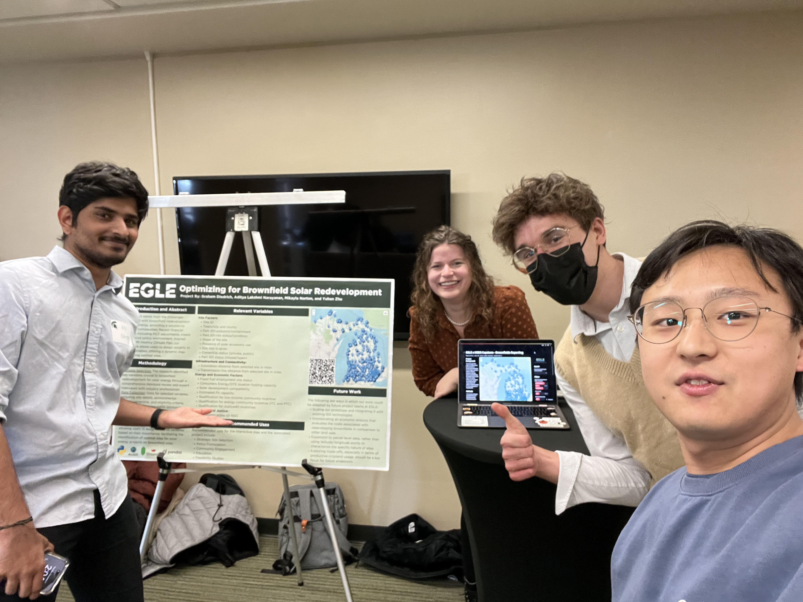

Welcome to Yuhan's Website

🌎 🌍 🌏
Hello World! I recently graduate from Data Science program.
I am a lover of all things tech. I live in the beautiful state of Michigan with my lovely wife.
I'm passionate about my work and always eager to take on new challenges.
🧑🏻💻 🔬 📈 🧬 🔭
About Me
I'm passionate about physics, computational modeling, new technology, and all things cool. I love traveling, photography, music, and making coffee. I'm always excited about working on different projects across various fields and consider myself a 'solution-giver' or 'problem-solver'. I excel at using data and analytical skills to answer questions, make sense of results, and address the 'How' and 'Why'. I'm hands-on, whether it's fixing water pipes, assembling computers, simulating the solar system, or doing gamma-ray spectrum experiments. I'm constantly adding new skills to my toolkit every day.
Education
Master of Science Program in Data ScienceMichigan State University
Sep 2022 – May 2024Big Data Analysis, Data Mining, Statistical Modeling for Data Science, Computational Optimization, Applied Machine Learning,
Bioinformatics: "Data Handling: Unix and Python", "Intro to Genomics", "Transcriptomic Data Analysis: from Reads to Functions".
Sep 2018 – May 2022
Minor in Computational Mathematics Science and Engineering
Michigan State University
Thermal & Statistical Physics, Electricity and Magnetism I, Electronics, Advanced Laboratory, Quantum Physics I, Intro to Nuclear Physics, Intro to Elementary Particle Physics, Computational Physics, Computational Modeling and Data Analysis, Probability and StatisticsMilestones
🚀 ✈️ 🚢 🚂 🚕 🚲
-
August 2024
Cost Calculator for Your Ride
Developed an interactive tool to estimate total car ownership costs, including variables like mileage, maintenance, insurance, and fuel, empowering users to make informed financial decisions by comparing different vehicles. [Learn More]
This tool simplifies the complex process of estimating car ownership expenses by dynamically calculating costs based on user input. It offers visualizations and customization options, making it a great resource for comparing vehicles and selecting one that fits within the budget.
Visit the Car Cost CalculatorAugust 2024
My Coffee Order Website
Created a personalized coffee ordering platform, blending front-end and back-end technologies to deliver a seamless and efficient ordering experience for my friends stopping by my place. [Learn More]
The platform integrates Firebase Realtime Database for instant order processing and allows for customization of coffee orders. Designed with a responsive interface, the site ensures a smooth user experience, demonstrating my progress toward full-stack development.
Visit My Coffee Order WebsiteJuly 2024
Personal Website
Designed and developed my personal website to showcase my fun projects and life, with a focus on responsive design and user-friendly navigation. [Learn More]
It adapts to various devices, ensuring an optimal viewing experience. The site is continually updated to reflect evolving skills and new content. Future features will include more interactive elements and additional pages for deeper exploration of my work and interests. The site is a continuous work in progress, reflecting my evolving skills in web development.
Visit This Website 😛Spring 2024
Facial Recognition Pet Dog Using Machine Learning
Developeing (yes, I am still improving and working on this) a machine learning based facial recognition system for a virtual pet dog, enhancing security by identifying familiar and unfamiliar faces. [Learn More]
The system utilizes CNN, SVM, and KNN algorithms to differentiate between familiar and unfamiliar faces, providing added security. Trained on the Labeled Faces in the Wild dataset, the model emphasizes real-time adaptability and accuracy. The project also considers the ethical implications of integrating such technology into everyday life.
View the Presentation Slides | Read the Project ProposalMay 2024
Digital Technology's Impact on Child Development
As part of a parenting class I took. I want to know how digital technology affects children's development, offering practical tips for parents. [Learn More]
This project explored how digital screens influence children's growth and behavior. It highlighted both the positive aspects, like learning opportunities, and the potential downsides, such as too much screen time. The project provided simple strategies for parents to manage their children's screen use effectively. An infographic was also created to present the findings in a clear and easy-to-understand way.
Read the Brief Paper | View the Presentation Slides January - April 2024
Bioinformatics Courses: Data Handling, Genomics, and RNA-Seq
Completed a series of bioinformatics coursework as part of the Bioinformatics Program, focusing on data handling with Unix, Python, R, genome sequencing, and RNA-Seq analysis. [Learn More]
The courses covered foundational skills in Unix and Python for managing large datasets, techniques for genome sequencing and data validation, and RNA-Seq analysis, including experimental design and clustering. Practical experience was gained using the MSU High Performance Computing Cluster (HPCC) to process biological data, with a strong focus on applying these skills in real-world research contexts.
Tools: Python, R, HPCC, Unix/Linux
The Program WebsiteDecember 2023
Optimizing for Brownfield Solar Redevelopment
Created an interactive tool for selecting optimal sites for solar energy projects, focusing on brownfield redevelopment. [Learn More]
The project combined spatial data analysis with database management to identify the most suitable locations for solar installations. The tool assists in the decision-making process by integrating various environmental and economic factors into the site selection criteria.
Tools: Python, GIS, MySQL, Database management
April 2023
CNN Optimizer Selection for MNIST Dataset
Optimized CNN performance for handwritten digit recognition by comparing different algorithms, achieving a balance between accuracy and computational efficiency. [Learn More]
The project explored various optimization algorithms, such as SGD, Momentum, RMSprop, and Adam, applied to the MNIST dataset. RMSprop provided the best results, but the study also highlighted the importance of tuning hyperparameters for each algorithm. This work demonstrated a deep understanding of machine learning optimization techniques and their practical applications.
Read the Final Report | View the Presentation SlidesDecember 2022
World Cup Champion Prediction
Applied machine learning techniques to predict the winner of the 2022 FIFA World Cup, providing users with an interactive web-based app to have a detailed look of how each ML models does. [Learn More]
The model analyzed past team performance, player statistics, and other factors to generate predictions, backed by Python script and Streamlit. Users could interact with the data and explore different scenarios. This project applied machine learning to real-world problems and showcased the development of user-friendly applications.
Try the World Cup Prediction AppOctober 2022
Investment Strategy Under Inflation
Developed a web-based application using Python, Streamlit, and Yahoo Finance API to analyze investment strategies in inflationary conditions, offering real-time financial insights and the data are up to date, always sync over the air. [Learn More]
The application integrates real-time financial data from `fredapi` and `yfinance` with visulation charts using altair package in Python, helping users evaluate different scenarios under inflationary pressures. The tool allows for input customization, providing tailored advice based on current economic conditions. The project involved both front-end and back-end development, ensuring a robust and user-friendly application.
See S&P500|Nasdaq|CPI DataSpring 2022
Solar System Visualization with Python
Created dynamic visualizations of the solar system's planetary trajectories, making astronomical system movement visulable through animation package Turtle in Python. [Learn More]
Using Python, planetary orbits were simulated with algorithms like Euler and Runge-Kutta. The resulting animations provide an engaging way to understand astronomical concepts, designed for educational purposes. The visualizations offer an interactive experience, making learning about the solar system more accessible and engaging.
Watch the Animation | View the Presentation SlidesSpring 2021
Gamma Ray Spectroscopy
Gamma-ray spectroscopy experiments using NaI and HPGe detectors, analyzing spectra to study gumma-ray and identify unknown radioactive materials. [Learn More]
Experiments explored gamma-ray spectroscopy principles to identify unknown radioactive sources, using NaI and HPGe detectors. Calibration techniques ensured accurate readings, with data visualization tools used to analyze spectra, identifying specific isotopes based on their unique energy signatures. The project provided valuable insights into nuclear physics and spectroscopy applications.
Read the Project Report | My Lab Notes (In case you're interested)Winter 2019
Modeling Global Sea Level Change
Used Python to model and predict global sea level changes based on historical data and carbon dioxide levels. [Learn More]
The project examined the relationship between carbon dioxide levels and global sea level changes, creating predictive models to forecast future trends. Time-series analysis and curve fitting techniques were applied, with the results highlighting the impact of climate change on sea levels. The project emphasized the importance of data-driven approaches to studying environmental changes.
View the Presentation Slides[Many other Activities]
♾️
These projects are just a glimpse of what has shaped me, and many more will define my future. I'm always excited for the new challenges and opportunities ahead. 🚀♾️